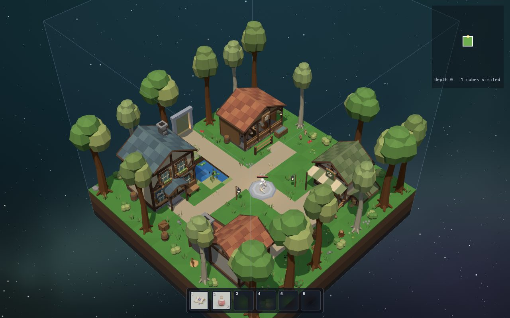

THE KIDS' GUIDE TO
DER FÜHRER FÜR KINDER:
How Cube Crawler Works
Wie Cube Crawler funktioniert
Cube Crawler is a game where you dig down through 21 floors of floating cubes, fighting monsters and finding treasure. This guide shows you how it is built on the inside: how the world gets invented, how monsters think, how swords hit and how the picture gets drawn.
Cube Crawler ist ein Spiel, in dem du dich durch 21 Stockwerke aus schwebenden Würfeln nach unten gräbst, Monster bekämpfst und Schätze findest. Dieser Führer zeigt dir, wie es innen gebaut ist: wie die Welt erfunden wird, wie Monster denken, wie Schwerter treffen und wie das Bild gemalt wird.
It was built by a person working together with AI coding agents. At the end you will learn how to do that too: how to ask an agent to change the game, and how to check that it did it right.
Gebaut hat es ein Mensch zusammen mit KI-Coding-Agenten. Am Ende lernst du, wie das geht: wie du einen Agenten bittest, das Spiel zu ändern, und wie du prüfst, dass er es richtig gemacht hat.
Start in town In der Stadt anfangen Play the game Das Spiel spielen

How deep do you want to dive?
Wie tief willst du tauchen?
Every room has slides with three detail levels. You can switch any time with the buttons at the top right of a room.
Jeder Raum hat Folien in drei Detailstufen. Du kannst jederzeit mit den Knöpfen oben rechts in einem Raum umschalten.
The map
Die Karte
Each room explains one part of the game. Like in the game, every room is one step deeper. Rooms you have visited glow cyan, like explored portals in the game. You can visit them in any order, but walking down from the top works best.
Jeder Raum erklärt einen Teil des Spiels. Wie im Spiel geht es mit jedem Raum eine Stufe tiefer. Räume, in denen du schon warst, leuchten türkis, wie erkundete Portale im Spiel. Du kannst sie in jeder Reihenfolge besuchen, aber von oben nach unten klappt es am besten.
The word book
Das Wörterbuch
Words with a dotted line, like seed, are explained when you point at them. All of them are in the word book.
Wörter mit einer gepunkteten Linie, wie Seed, werden erklärt, wenn du darauf zeigst. Alle stehen im Wörterbuch.
For grown-ups
Für Erwachsene
The guide runs real game code in its demos, so it needs the game's web server:
npm run serve, then open /kids-docs/. The grown-up design notes are in docs/;
how this guide is built is in kids-docs/README.md.
Die Demos in diesem Führer benutzen echten Spielcode und brauchen deshalb den Webserver des Spiels:
npm run serve, dann /kids-docs/ öffnen. Die Entwurfsnotizen für Erwachsene liegen in docs/
(auf Englisch); wie dieser Führer gebaut ist, steht in kids-docs/README.md.